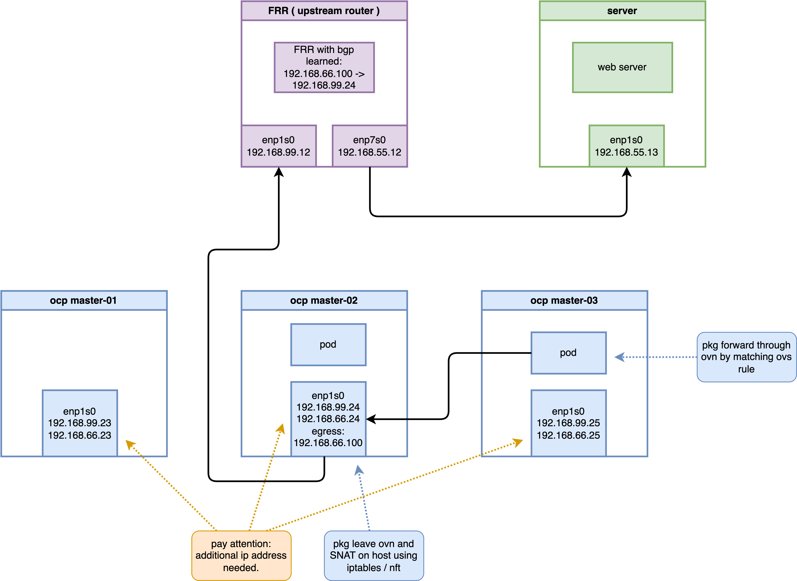

Deep Dive: OVN Egress IP with BGP in OpenShift 4.19
This document provides a comprehensive technical guide on implementing and troubleshooting the Egress IP solution in an OpenShift 4.19 environment using OVN-Kubernetes and BGP (FRR). It explores the intricate “Tromboning” effect, where traffic is redirected across nodes for SNAT, and dissects the underlying OVS and Linux kernel mechanisms.
1. Abstract
In modern cloud-native architectures, controlling the exit point of cluster traffic is crucial for security and compliance. This guide demonstrates how to enable BGP with OVN-K to advertise Egress IPs to an upstream router. We will trace a data packet from a Pod to an external server, revealing how OVN “high-jacks” the route, encapsulates it via Geneve tunnels, and performs SNAT on a specific hosted node.
2. Lab Environment Architecture
To validate the technical feasibility, we utilize a virtualized environment built on a Baremetal CentOS 9 host with KVM/Libvirt.
2.1 Topology Overview
- Host System: CentOS 9 (IP:
192.168.99.1) - Bridge:
br-ocp(192.168.99.0/24)
2.2 Component Details
- OpenShift 4.19 Cluster:
- Nodes: 3 Compact nodes (Master/Worker)
- IP Range:
192.168.99.23to192.168.99.25 - Egress IP Pool:
192.168.66.100/24 - Add-ons: MetalLB/FRR-K8s for BGP capabilities.
- Upstream Router (FRR):
- OS: CentOS 9 with FRR
- Interface
eth0(Internal):192.168.99.12(Connects to OCP cluster) - Interface
eth1(External):192.168.55.12(Connects to Target Server)
- External Server:
- OS: CentOS 9
- Interface
eth0:192.168.55.13 - Gateway:
192.168.55.12(The KVM Router)

3. Infrastructure Configuration
3.1 Router (FRR) Node Setup
The router acts as the BGP peer for the OpenShift cluster. We must enable IPv4 forwarding and configure BGP to listen to OCP worker nodes.
# 1. Install FRR and base routing components
sudo dnf install -y frr
# Explicitly enable the bgpd process in the daemons file
sudo sed -i 's/^bgpd=no/bgpd=yes/' /etc/frr/daemons
sudo systemctl enable --now frr
# 2. Enable kernel IPv4 forwarding
echo "net.ipv4.ip_forward = 1" | sudo tee -a /etc/sysctl.d/99-ipforward.conf
sudo sysctl -p /etc/sysctl.d/99-ipforward.conf
# 3. Configure FRR BGP Instance
cat <<EOF | sudo tee /etc/frr/frr.conf
frr defaults traditional
log syslog informational
no ipv6 forwarding
!
router bgp 64512
bgp router-id 192.168.99.12
! Define iBGP neighbors for each OCP cluster node
neighbor 192.168.99.23 remote-as 64512
neighbor 192.168.99.24 remote-as 64512
neighbor 192.168.99.25 remote-as 64512
! Enable ECMP and advertise local networks
address-family ipv4 unicast
network 192.168.55.0/24
maximum-paths ibgp 4
exit-address-family
!
line vty
!
EOF
# 4. Restart FRR to apply changes
sudo systemctl restart frr3.2 External Server Setup
The server acts as the traffic destination. We use Python to spin up simple HTTP listeners to verify connectivity from unrestricted ports.
# Set default gateway to the Router
# sudo ip route add default via 192.168.55.12
sudo ip route add 192.168.66.100 via 192.168.55.12
# Verify routing table
ip r
# default via 192.168.99.1 dev enp1s0 proto static metric 100
# 192.168.55.0/24 dev enp1s0 proto kernel scope link src 192.168.55.13 metric 100
# 192.168.66.100 via 192.168.55.12 dev enp1s0
# 192.168.99.0/24 dev enp1s0 proto kernel scope link src 192.168.99.13 metric 100
# Start HTTP listeners on different ports to prove Egress IP transparency
nohup python3 -m http.server 80 &
nohup python3 -m http.server 8080 &
# Use tcpdump to observe incoming traffic from the Egress IP (192.168.66.100)
sudo tcpdump -i any 'tcp port 80 or tcp port 8080' -n4. OpenShift Configuration Flow
4.1 Deploying the Test Application
We deploy a test toolkit on specific nodes to verify traffic flows.
oc new-project demo-egress
cat <<EOF | oc apply -f -
apiVersion: apps/v1
kind: Deployment
metadata:
name: edge-request-deployment
namespace: demo-egress
spec:
replicas: 2
selector:
matchLabels:
app: requester
template:
metadata:
labels:
app: requester
spec:
affinity:
nodeAffinity:
requiredDuringSchedulingIgnoredDuringExecution:
nodeSelectorTerms:
- matchExpressions:
- key: kubernetes.io/hostname
operator: In
values:
- master-02-demo
- master-03-demo
containers:
- name: toolkit
image: quay.io/wangzheng422/qimgs:centos9-test-2025.12.18.v01
command: ["sleep", "infinity"]
EOF4.2 Enabling BGP and Node Configuration
Assign auxiliary IPs to the nodes’ br-ex
interfaces to support the Egress IP subnet.
# Safely append auxiliary IPs to Node interface configurations
oc debug node/master-01-demo -- chroot /host /bin/bash -c "nmcli connection modify enp1s0 +ipv4.addresses 192.168.66.23/24 && reboot"
oc debug node/master-02-demo -- chroot /host /bin/bash -c "nmcli connection modify enp1s0 +ipv4.addresses 192.168.66.24/24 && reboot"
oc debug node/master-03-demo -- chroot /host /bin/bash -c "nmcli connection modify enp1s0 +ipv4.addresses 192.168.66.25/24 && reboot"
# 2. Label all nodes with egress-assignable (OVN-K uses this label to select nodes eligible to host EgressIPs)
oc label node --all k8s.ovn.org/egress-assignable="" --overwrite
# node/master-01-demo labeled
# node/master-02-demo labeled
# node/master-03-demo labeled
# Enable FRR and Route Advertisements in the Network Operator
oc patch Network.operator.openshift.io cluster --type=merge -p \
'{
"spec": {
"additionalRoutingCapabilities": {
"providers": ["FRR"]
},
"defaultNetwork": {
"ovnKubernetesConfig": {
"routeAdvertisements": "Enabled"
}
}
}
}'5. Egress IP and Route Advertisement Implementation
5.1 Preparing Nodes for Egress Assignment
Label nodes to allow OVN-K to host Egress IPs.
# Label all nodes as egress-assignable
oc label node --all k8s.ovn.org/egress-assignable="" --overwrite5.2 Configuring OVN Route Advertisements
Instruct OVN to translate Egress IP routes into BGP prefixes for FRR.
cat <<EOF | oc apply -f -
apiVersion: k8s.ovn.org/v1
kind: RouteAdvertisements
metadata:
name: default
spec:
advertisements:
- EgressIP
nodeSelector: {}
frrConfigurationSelector:
matchLabels:
use-for-advertisements: "true"
networkSelectors:
- networkSelectionType: DefaultNetwork
EOF5.3 Deploying the Egress IP CRD
Assign the static IP 192.168.66.100 to the
demo-egress namespace.
cat <<EOF | oc apply -f -
apiVersion: k8s.ovn.org/v1
kind: EgressIP
metadata:
name: project-egressip
spec:
egressIPs:
- 192.168.66.100
namespaceSelector:
matchLabels:
kubernetes.io/metadata.name: demo-egress
EOF
# Verify assignment
sleep 5
oc get egressips project-egressip -o yaml
# apiVersion: k8s.ovn.org/v1
# kind: EgressIP
# metadata:
# annotations:
# k8s.ovn.org/egressip-mark: "50000"
# creationTimestamp: "2026-03-01T12:27:06Z"
# generation: 2
# name: project-egressip
# resourceVersion: "154742"
# uid: af6eec56-82cc-4efb-b2ae-ef120337f501
# spec:
# egressIPs:
# - 192.168.66.100
# namespaceSelector:
# matchLabels:
# kubernetes.io/metadata.name: demo-egress
# status:
# items:
# - egressIP: 192.168.66.100
# node: master-02-demo6. Operational Verification
6.1 BGP Route Confirmation
Login to the upstream Router VM and verify the dynamically advertised route.
vtysh -c "show ip route bgp"
# B>* 192.168.66.100/32 [200/0] via 192.168.99.24, enp1s0, weight 1, 00:00:206.2 Connectivity Test
Execute curl from Pods on different nodes to
verify the SNAT target on the external server.
NODE2_POD=$(oc get po -n demo-egress -o wide | grep "master-02-demo" | awk '{print $1}')
NODE3_POD=$(oc get po -n demo-egress -o wide | grep "master-03-demo" | awk '{print $1}')
# Test from node hosting the Egress IP
oc exec -it $NODE2_POD -n demo-egress -- curl -I http://192.168.55.13 --connect-timeout 2
# Test from a different node (verifies "Tromboning")
oc exec -it $NODE3_POD -n demo-egress -- curl -I http://192.168.55.13 --connect-timeout 26.3 Negative Experiment: Traffic Interruption due to Upstream Routing Mismatch
If the upstream router directs Egress IP traffic to a non-hosted node (due to ECMP load balancing or static route misconfiguration), the traffic will be dropped even if that node has BGP advertisements, because it cannot match the local SNAT rules.
# Experiment: Manually add an incorrect static route on the Router, pointing to non-hosted node master-01 (192.168.99.23)
vtysh -c 'conf t' -c 'ip route 192.168.66.100/32 192.168.99.23'
# Verify the routing table: the static route (distance 1) is now preferred over the BGP route (distance 200)
vtysh -c 'show ip route 192.168.66.100/32'
# Routing entry for 192.168.66.100/32
# Known via "static", distance 1, metric 0, best
# Last update 00:00:05 ago
# * 192.168.99.23, via enp1s0, weight 1
# Routing entry for 192.168.66.100/32
# Known via "bgp", distance 200, metric 0
# Last update 00:01:27 ago
# 192.168.99.24, via enp1s0, weight 1
# Initiate a request again; the connection will time out as the return path cannot be established (Timeout)
oc exec -it $NODE2_POD -n demo-egress -- curl -I -vvv http://192.168.55.13:8080 --connect-timeout 2
# * Trying 192.168.55.13:8080...
# * Connection timed out after 2001 milliseconds
# Clean up the incorrect route to restore the environment
vtysh -c 'conf t' -c 'no ip route 192.168.66.100/32 192.168.99.23'6.4 Key Troubleshooting Logs (Control Plane)
# Retrieve OVN control plane election logs for Egress IP assignment
oc logs -n openshift-ovn-kubernetes -l app=ovnkube-control-plane -c ovnkube-cluster-manager --tail=100 | grep -iE "egressip|project-egressip|192.168.66.100"
# I0301 12:09:37.165528 1 controller.go:133] Adding controller clustermanager routeadvertisements egressip controller event handlers
# I0301 12:09:37.165563 1 shared_informer.go:350] "Waiting for caches to sync" controller="clustermanager routeadvertisements egressip controller"
# I0301 12:09:41.082425 1 egressip_healthcheck.go:203] Closing connection with master-03-demo (10.133.0.2:9107)
# I0301 12:17:12.260471 1 egressip_event_handler.go:130] Node: master-01-demo has been labeled, adding it for egress assignment
# I0301 12:27:06.891685 1 egressip_controller.go:1330] Successful assignment of egress IP: 192.168.66.100 to network 192.168.66.0/24 on node: &{egressIPConfig:0xc007934f00 mgmtIPs:[[10 132 0 2]] allocations:map[192.168.66.100:project-egressip] healthClient:0xc0068ea5d0 isReady:true isReachable:true isEgressAssignable:true name:master-02-demo}
# I0301 12:27:06.891928 1 egressip_controller.go:1733] Patching status on EgressIP project-egressip: [{add /metadata/annotations map[k8s.ovn.org/egressip-mark:50000]} {replace /status {[{master-02-demo 192.168.66.100}]}}]
# I0301 12:09:28.120797 1 config.go:2358] Parsed config: {Default:{MTU:1400 RoutableMTU:0 ConntrackZone:64000 HostMasqConntrackZone:0 OVNMasqConntrackZone:0 HostNodePortConntrackZone:0 ReassemblyConntrackZone:0 EncapType:geneve EncapIP: EffectiveEncapIP: EncapPort:6081 InactivityProbe:100000 OpenFlowProbe:0 OfctrlWaitBeforeClear:0 MonitorAll:true OVSDBTxnTimeout:1m40s LFlowCacheEnable:true LFlowCacheLimit:0 LFlowCacheLimitKb:1048576 RawClusterSubnets:10.132.0.0/14/23 ClusterSubnets:[] EnableUDPAggregation:true Zone:global RawUDNAllowedDefaultServices:default/kubernetes,openshift-dns/dns-default UDNAllowedDefaultServices:[]} Logging:{File: CNIFile: LibovsdbFile:/var/log/ovnkube/libovsdb.log Level:4 LogFileMaxSize:100 LogFileMaxBackups:5 LogFileMaxAge:0 ACLLoggingRateLimit:20} Monitoring:{RawNetFlowTargets: RawSFlowTargets: RawIPFIXTargets: NetFlowTargets:[] SFlowTargets:[] IPFIXTargets:[]} IPFIX:{Sampling:400 CacheActiveTimeout:60 CacheMaxFlows:0} CNI:{ConfDir:/etc/cni/net.d Plugin:ovn-k8s-cni-overlay} OVNKubernetesFeature:{EnableAdminNetworkPolicy:true EnableEgressIP:true EgressIPReachabiltyTotalTimeout:1 EnableEgressFirewall:true EnableEgressQoS:true EnableEgressService:true EgressIPNodeHealthCheckPort:9107 EnableMultiNetwork:true EnableNetworkSegmentation:true EnablePreconfiguredUDNAddresses:false EnableRouteAdvertisements:false EnableMultiNetworkPolicy:false EnableStatelessNetPol:false EnableInterconnect:false EnableMultiExternalGateway:true EnablePersistentIPs:false EnableDNSNameResolver:false EnableServiceTemplateSupport:false EnableObservability:false EnableNetworkQoS:false AdvertisedUDNIsolationMode:strict} Kubernetes:{BootstrapKubeconfig: CertDir: CertDuration:10m0s Kubeconfig: CACert: CAData:[] APIServer:https://api-int.demo-01-rhsys.wzhlab.top:6443 Token: TokenFile: CompatServiceCIDR: RawServiceCIDRs:172.22.0.0/16 ServiceCIDRs:[] OVNConfigNamespace:openshift-ovn-kubernetes OVNEmptyLbEvents:false PodIP: RawNoHostSubnetNodes: NoHostSubnetNodes:<nil> HostNetworkNamespace:openshift-host-network DisableRequestedChassis:false PlatformType:BareMetal HealthzBindAddress:0.0.0.0:10256 CompatMetricsBindAddress: CompatOVNMetricsBindAddress: CompatMetricsEnablePprof:false DNSServiceNamespace:openshift-dns DNSServiceName:dns-default} Metrics:{BindAddress: OVNMetricsBindAddress: ExportOVSMetrics:false EnablePprof:false NodeServerPrivKey: NodeServerCert: EnableConfigDuration:false EnableScaleMetrics:false} OvnNorth:{Address: PrivKey: Cert: CACert: CertCommonName: Scheme: ElectionTimer:0 northbound:false exec:<nil>} OvnSouth:{Address: PrivKey: Cert: CACert: CertCommonName: Scheme: ElectionTimer:0 northbound:false exec:<nil>} Gateway:{Mode:shared Interface: GatewayAcceleratedInterface: EgressGWInterface: NextHop: VLANID:0 NodeportEnable:true DisableSNATMultipleGWs:false V4JoinSubnet:100.64.0.0/16 V6JoinSubnet:fd98::/64 V4MasqueradeSubnet:169.254.169.0/29 V6MasqueradeSubnet:fd69::/125 MasqueradeIPs:{V4OVNMasqueradeIP:169.254.169.1 V6OVNMasqueradeIP:fd69::1 V4HostMasqueradeIP:169.254.169.2 V6HostMasqueradeIP:fd69::2 V4HostETPLocalMasqueradeIP:169.254.169.3 V6HostETPLocalMasqueradeIP:fd69::3 V4DummyNextHopMasqueradeIP:169.254.169.4 V6DummyNextHopMasqueradeIP:fd69::4 V4OVNServiceHairpinMasqueradeIP:169.254.169.5 V6OVNServiceHairpinMasqueradeIP:fd69::5} DisablePacketMTUCheck:false RouterSubnet: SingleNode:false DisableForwarding:false AllowNoUplink:false EphemeralPortRange:} MasterHA:{ElectionLeaseDuration:137 ElectionRenewDeadline:107 ElectionRetryPeriod:26} ClusterMgrHA:{ElectionLeaseDuration:137 ElectionRenewDeadline:107 ElectionRetryPeriod:26} HybridOverlay:{Enabled:false RawClusterSubnets: ClusterSubnets:[] VXLANPort:4789} OvnKubeNode:{Mode:full DPResourceDeviceIdsMap:map[] MgmtPortNetdev: MgmtPortDPResourceName:} ClusterManager:{V4TransitSwitchSubnet:100.88.0.0/16 V6TransitSwitchSubnet:fd97::/64}}6.5 Infrastructure and Global Configuration Verification
# Check Node status and labels
oc get nodes -o custom-columns=NAME:.metadata.name,NODEIPS:.status.addresses
# NAME NODEIPS
# master-01-demo [map[address:192.168.99.23 type:InternalIP] map[address:master-01-demo type:Hostname]]
# master-02-demo [map[address:192.168.99.24 type:InternalIP] map[address:master-02-demo type:Hostname]]
# master-03-demo [map[address:192.168.99.25 type:InternalIP] map[address:master-03-demo type:Hostname]]
# Verify OVN-Kubernetes global configuration
oc get network.config.openshift.io cluster -o yaml
# apiVersion: config.openshift.io/v1
# kind: Network
# spec:
# clusterNetwork:
# - cidr: 10.132.0.0/14
# hostPrefix: 23
# networkType: OVNKubernetes
# serviceNetwork:
# - 172.22.0.0/16
oc get network.operator.openshift.io cluster -o yaml
# apiVersion: operator.openshift.io/v1
# kind: Network
# spec:
# additionalRoutingCapabilities:
# providers:
# - FRR
# defaultNetwork:
# ovnKubernetesConfig:
# routeAdvertisements: Enabled
# type: OVNKubernetes6.6 Egress IP ARP Behavior and Switch MAC Address Learning
In the BGP Egress IP scenario, the upstream FRR router
does not send ARP requests for
192.168.66.100 — it performs L3 forwarding via the
BGP routing table
(192.168.66.100/32 via 192.168.99.24) and only
needs to ARP-resolve the next-hop
192.168.99.24.
However, since all OCP nodes have
192.168.66.x/24 auxiliary addresses configured on
br-ex, the Linux kernel considers
192.168.66.100 to be on the same L2 segment. This
causes inter-node ARP requests and replies for the Egress IP.
These ARP exchanges are learned by the physical switch
(br-ocp), which populates its MAC address table
with the mapping for 192.168.66.100.
Key Verification
1. The upstream router only sees broadcast ARP Requests, no Replies
# Packet capture on the FRR router — only ARP Requests (broadcast), no Replies
[root@routing-frr ~]# tcpdump -i any -nnn host 192.168.66.100
# 19:42:10.039428 enp1s0 B ARP, Request who-has 192.168.66.100 tell 192.168.99.24, length 28
# 19:43:02.354098 enp7s0 B ARP, Request who-has 192.168.66.100 tell 192.168.99.25, length 28
# 19:43:04.502257 enp1s0 B ARP, Request who-has 192.168.66.100 tell 192.168.99.23, length 28
# (Only broadcast Requests, no Replies seen)2. The Egress IP hosted node correctly responds to ARP, and the reply exits via the physical NIC
# Capture on all interfaces of master-02 (Egress IP hosted node)
oc debug node/master-02-demo -- bash -c "tcpdump -i any -v -nnn 'arp and host 192.168.66.100' -c 10"
# 13:28:20.602372 enp2s0 B ARP, Request who-has 192.168.66.100 tell 192.168.66.23, length 28
# 13:28:20.602934 br-ex B ARP, Request who-has 192.168.66.100 tell 192.168.66.23, length 28
# 13:28:20.602955 br-ex Out ARP, Reply 192.168.66.100 is-at 00:50:56:8e:2a:32, length 28
# 13:28:20.603185 enp1s0 Out ARP, Reply 192.168.66.100 is-at 00:50:56:8e:2a:32, length 28
# ↑ Reply generated on br-ex, sent out via enp1s0 physical NIC to the physical network3. The requesting node successfully receives the ARP reply
# Manual arping from master-01 — successfully receives master-02's MAC address
oc debug node/master-01-demo -- chroot /host bash -c "arping -c 3 -I br-ex 192.168.66.100"
# ARPING 192.168.66.100 from 192.168.66.23 br-ex
# Unicast reply from 192.168.66.100 [00:50:56:8E:2A:32] 2.148ms
# Unicast reply from 192.168.66.100 [00:50:56:8E:2A:32] 3.988ms
# Received 3 response(s)Root Cause Analysis
| Frame Type | Switch Forwarding Behavior | FRR Router Visibility |
|---|---|---|
| ARP Request (broadcast) | Flooded to all ports | ✅ Visible |
| ARP Reply (unicast) | Forwarded only to destination MAC port | ❌ Not visible |
Data Center Implications
The physical switch (br-ocp) learns the MAC
00:50:56:8e:2a:32 (master-02) and its port mapping
from the ARP Reply source MAC. This means the Egress IP actually
has dual reachability paths:
- L3 BGP Route (used by cross-subnet
devices): External device → FRR checks BGP table → forwards to
192.168.99.24 - L2 ARP Direct (used by same-L2 devices): Same-subnet node → ARP resolution → direct L2 forwarding to master-02
The core value of BGP lies in cross-L3 boundary reachability and failover, not in same-L2 domain addressing.
7. Under the Hood: The Mechanics of Redirection
When an Egress IP is assigned to master-02, OVN
performs several low-level operations to ensure all traffic from
the specified namespace exits via that node.
7.1 OVN Address Sets
OVN doesn’t understand “Namespaces” at the flow level. It creates a dynamic Address Set containing all Pod IPs in that namespace.
OVN_NODE_01_POD=$(oc get po -n openshift-ovn-kubernetes -l app=ovnkube-node -o wide | grep "master-01-demo" | awk '{print $1}')
oc exec -n openshift-ovn-kubernetes $OVN_NODE_01_POD -c ovn-controller -- ovn-nbctl list address_set | grep -A 2 -B 2 -i demo-egress
# _uuid : d13fa80a-5e84-4eeb-bef7-d6d3cc51feb9
# addresses : ["10.132.0.13", "10.133.0.9"]
# external_ids : {ip-family=v4, "k8s.ovn.org/id"="default-network-controller:Namespace:demo-egress:v4", "k8s.ovn.org/name"=demo-egress, "k8s.ovn.org/owner-controller"=default-network-controller, "k8s.ovn.org/owner-type"=Namespace}
# name : a115636270674568277587.2 OVS OpenFlow and Interceptor Markers
On the originating node (master-03), OVS
intercepts traffic from the Pod and applies a metadata mark.
# Capture OVS OpenFlow for the Pod IP
oc exec -n openshift-ovn-kubernetes $OVN_NODE_03_POD -c ovn-controller -- ovs-ofctl dump-flows br-int | grep "10.133.0.9"
# Full OVS flow dump for the Egress Pod (covering Table 19, 25, 30, 48, 73, 75, 79)
# cookie=0x23609491, duration=5303.504s, table=19, n_packets=0, n_bytes=0, idle_age=5303, priority=103,ct_state=+rpl+trk,ip,metadata=0x2,nw_src=10.133.0.9 actions=load:0x2a->NXM_NX_PKT_MARK[],resubmit(,20)
# cookie=0xc4170ac5, duration=5303.504s, table=25, n_packets=0, n_bytes=0, idle_age=5303, priority=102,ip,metadata=0x5,nw_src=10.133.0.9,nw_dst=192.168.66.23 actions=load:0x3f0->NXM_NX_PKT_MARK[],load:0->OXM_OF_PKT_REG4[32..47],resubmit(,26)
# cookie=0x7d8c250c, duration=5303.518s, table=25, n_packets=16, n_bytes=1314, idle_age=4195, priority=100,ip,metadata=0x5,nw_src=10.133.0.9 actions=load:0x64580003->NXM_NX_XXREG0[96..127],load:0x64580002->NXM_NX_XXREG1[64..95],mod_dl_src:0a:58:64:58:00:02,load:0x1->NXM_NX_REG15[],load:0x1->NXM_NX_REG10[0],load:0->OXM_OF_PKT_REG4[32..47],load:0x1->OXM_OF_PKT_REG4[9],resubmit(,26)
# cookie=0xb6f4a374, duration=5671.914s, table=30, n_packets=0, n_bytes=0, idle_age=5671, priority=100,arp,reg14=0xb8,metadata=0x2,dl_dst=ff:ff:ff:ff:ff:ff,arp_tpa=10.133.0.9,arp_op=1 actions=resubmit(,31)
# cookie=0x1a0c6296, duration=5671.917s, table=73, n_packets=16, n_bytes=1314, idle_age=4195, priority=90,ip,reg14=0xb8,metadata=0x2,dl_src=0a:58:0a:85:00:09,nw_src=10.133.0.9 actions=load:0->NXM_NX_REG10[12]
# cookie=0x1a0c6296, duration=5671.917s, table=75, n_packets=16, n_bytes=1545, idle_age=4195, priority=95,ip,reg15=0xb8,metadata=0x2,dl_dst=0a:58:0a:85:00:09,nw_dst=10.133.0.9 actions=load:0->NXM_NX_REG10[12]
# cookie=0xb97d223d, duration=6312.193s, table=79, n_packets=32, n_bytes=2628, idle_age=4195, priority=100,ip,reg14=0x3,metadata=0x5,dl_src=0a:58:0a:85:00:09,nw_src=10.133.0.9 actions=drop7.3 Kernel Policy-Based Routing (PBR)
The OVS mark translates to a Linux fwmark. The
host’s policy routing forces these packets to a specific routing
table.
oc debug node/master-03-demo -- chroot /host /bin/bash -c "ip rule show"
# 30: from all fwmark 0x1745ec lookup 7
oc debug node/master-03-demo -- chroot /host /bin/bash -c "ip route list table 7"
# 172.22.0.0/16 via 10.133.0.1 dev ovn-k8s-mp07.4 Hexadecimal Magic: Redirection via Transit Switch
The most advanced part of OVN-K’s architecture is the direct rewrite of destination registers in OVS Table 25.
# Example OVS actions for redirection:
# load:0x64580003->NXM_NX_XXREG0[96..127],
# load:0x64580002->NXM_NX_XXREG1[64..95],
# mod_dl_src:0a:58:64:58:00:02Deconstruction:
0x64580003: This is the hex representation of an IP address.0x64= 1000x58= 880x00= 00x03= 3- Result:
100.88.0.3(The Transit Switch IP formaster-02).
0a:58:64:58:00:02: The virtual MAC address ofmaster-03on the Transit Switch.
This tells OVS: “Don’t look at the logical router anymore.
Encapsulate this packet and send it directly to the tunnel
endpoint for master-02 (100.88.0.3).”
7.5 Final SNAT on the Hosted Node
Once the packet traverses the Geneve tunnel and arrives at
master-02, it hits the iptables NAT
table just before leaving the physical interface.
oc debug node/master-02-demo -- chroot /host /bin/bash -c "iptables -t nat -S | grep 192.168.66.100"
# -A OVN-KUBE-EGRESS-IP-MULTI-NIC -s 10.133.0.9/32 -o br-ex -j SNAT --to-source 192.168.66.1008. Conclusion
The OVN Egress IP solution in OpenShift 4.19 is a sophisticated interplay between Kubernetes CRDs, OVN logical abstractions, OVS OpenFlow rules, and Linux kernel policy routing. By directly manipulating registers at the lowest level (OVS Table 25), OVN-K achieves high-performance traffic redirection and “Tromboning” without the overhead of traditional hop-by-hop routing lookups. Understanding these hexadecimal mappings is key to advanced network troubleshooting in OCP 4.x.